Emergency Water Removal
Truck-mounted and portable extraction pulls standing water out of floors, carpets and crawl spaces — fast.
Full page →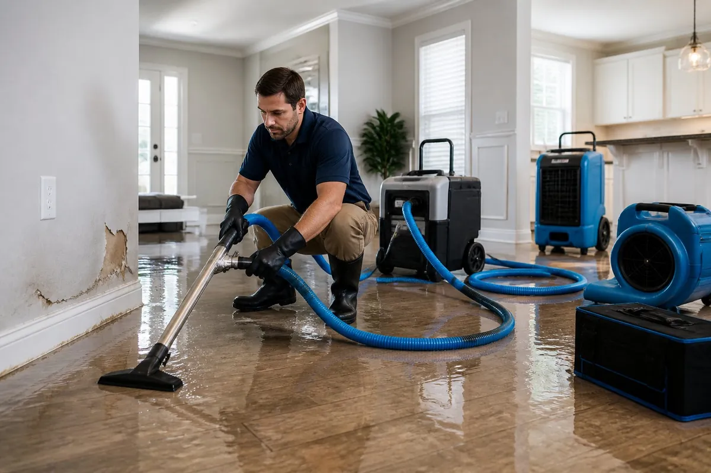
Fast extraction, drying, and cleanup — 24/7 in Lubbock.
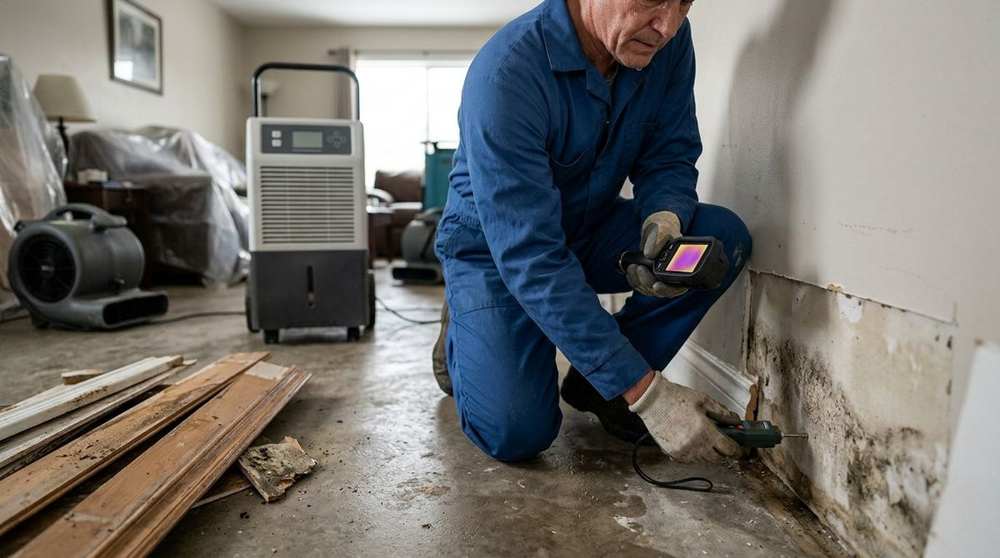
Water emergencies rarely happen one at a time. If a storm rolls over the South Plains and every line is busy, call or text — here is what to do.
Call (806) 217-9635 any time — nights, weekends and holidays included. Lubbock dispatch answers around the clock.
If every line is busy and your call is missed, text (806) 217-9635 with your neighborhood and the problem — for example “Burst pipe, Wolfforth”.
Dispatch reads your text and calls you back to send the nearest crew, same-day where available, or the 24/7 emergency crew for active flooding.
Eight services, one goal: get the water out, get the structure dry, and hand your home back clean. Every service has its own full page below — what it covers, the signs you need it, and how a visit works.
Truck-mounted and portable extraction pulls standing water out of floors, carpets and crawl spaces — fast.
Full page →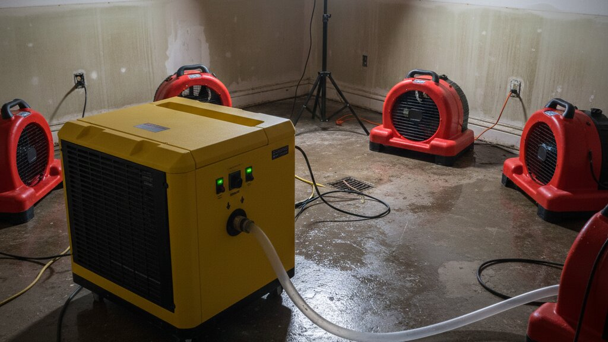
Air movers, dehumidifiers and daily moisture readings dry walls, floors and framing to standard.
Full page →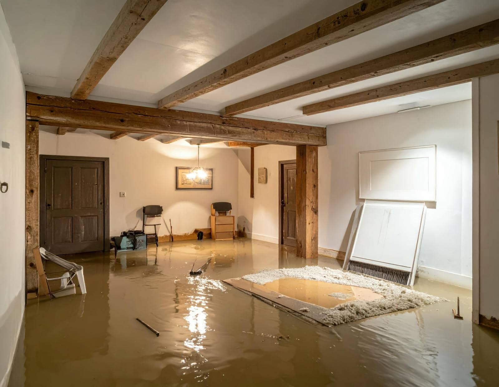
Storm and rising-water cleanup: extraction, debris, cleaning, sanitizing and full structural drying.
Full page →Contaminated water handled safely: extraction, disposal, disinfecting and drying before reuse.
Full page →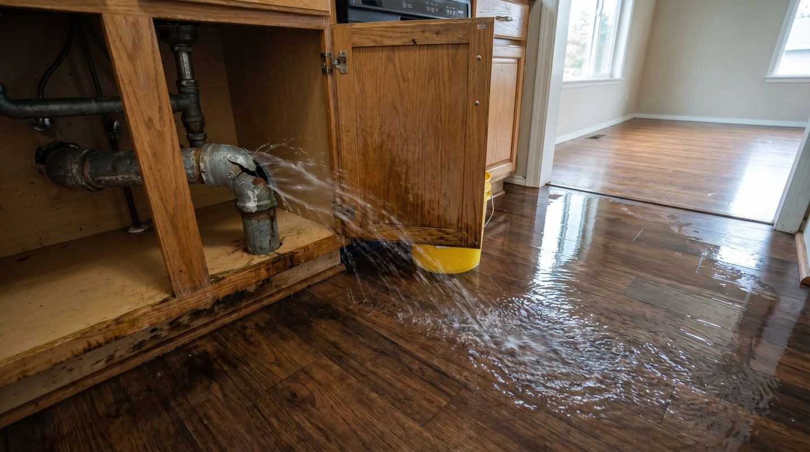
Frozen and burst supply lines flood fast. We extract, open wet cavities and dry the whole path of the water.
Full page →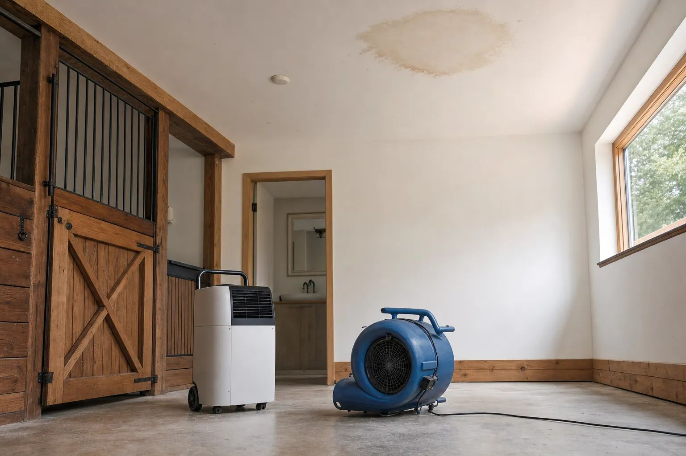
Wind-driven rain and roof leaks soak ceilings and attics. We dry cavities you cannot see into.
Full page →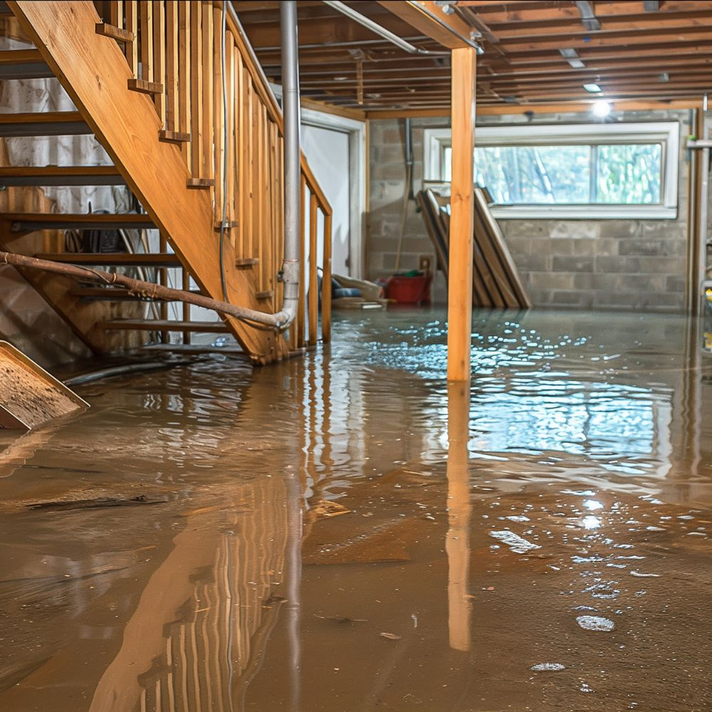
Pumping, extraction and drying for the lowest, slowest-drying parts of South Plains homes.
Full page →No-cooling moments have nothing on a flooding kitchen at 2 a.m. One number, answered around the clock.
Full page →Trust here is built on verifiable facts, not invented praise: the same crews, the same process, and the same business details on every page, every listing, and every visit.
Crews are based in Lubbock and dispatch around the clock, including nights, weekends, and holidays.
Extraction and drying start on the first visit, so standing water does not keep spreading through walls and floors.
Equipment is removed only when daily moisture readings confirm walls, floors, and framing measure dry.
After inspection and moisture mapping, you approve the complete scope and price in writing before restoration work begins.
No customer quotes, names, star ratings, or review counts are shown here yet, because none have been supplied for publication. Once real reviews are provided by the business, they will appear here exactly as written, with the customer’s permission. Until then, judge this business on the verified facts above and on the Business Profile & Reviews section below.
Extraction removes the bulk of the water in hours; drying then handles what soaked in. Skipping or rushing extraction is the single most expensive mistake in water damage, because every gallon left behind keeps wicking into walls and subfloors.

Water damage across the South Plains follows a pattern — playa lake storms, hard freezes, aging supply lines — and so does our response: find all of the water, not just the water you can see, then dry it to measured standard.
One call, 24/7. If we miss it, text us — see above.
Moisture meters and thermal checks trace the full path of the water through your home.
Standing water removed, then a drying plan with daily readings until dry standard is met.
Areas cleaned and sanitized, with photos and moisture logs handed to you at the end.
Flooded floors, drying setups and inspections from real South Plains water losses — the same equipment and steps described on this page.
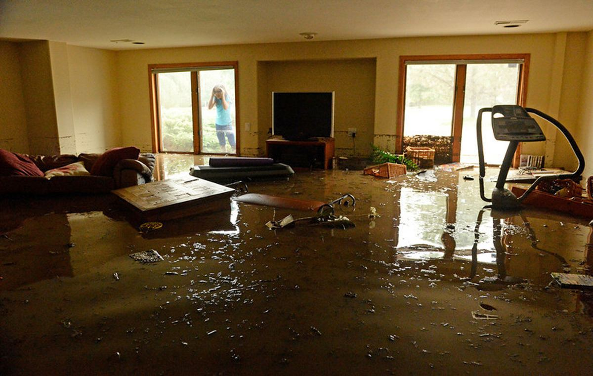
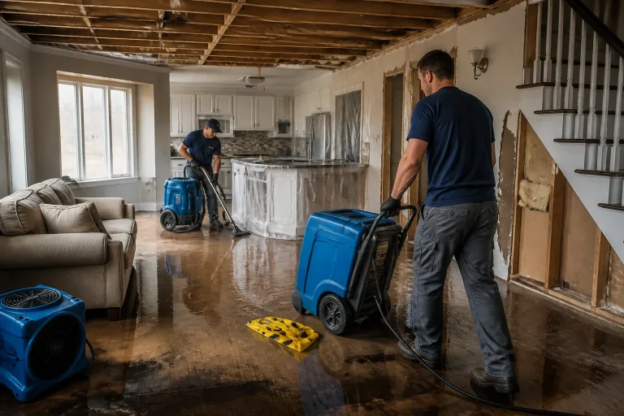
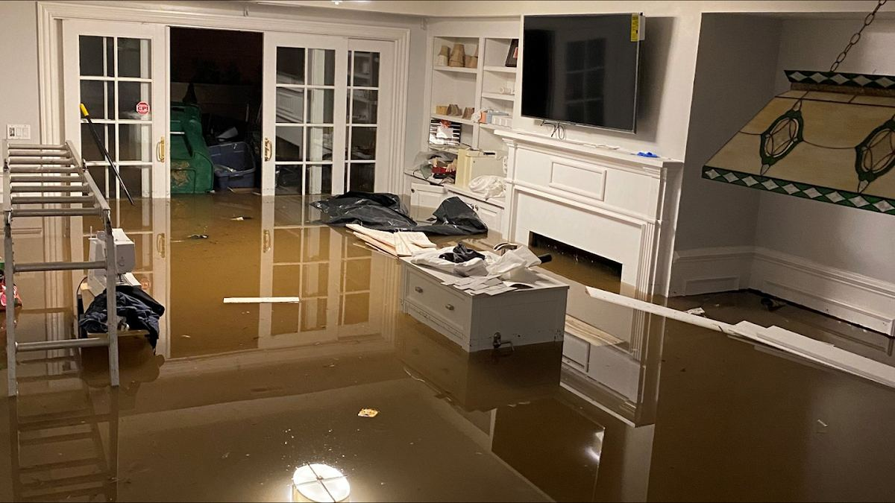

A room can feel dry on day one and still hold moisture deep in the wall cavity — the hidden water that warps floors weeks later and feeds mold behind baseboards. Our drying plans are built on daily readings until every material measures at dry standard.
Lubbock is home base. From here crews cover the surrounding towns in every direction — Wolfforth and Levelland to the west, Slaton and Ransom Canyon to the southeast, Idalou to the east, and Shallowater, New Deal, Abernathy and Plainview up the I-27 corridor to the north — plus Buffalo Springs Lake, Reese Center, Posey, Acuff, Roosevelt, Smyer and Lorenzo. Every town below has its own full page. Select a town on the map or in the list to see it.
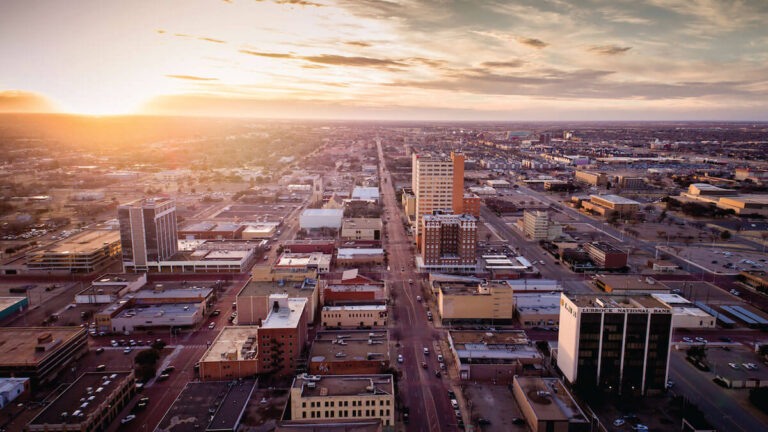
Home base for all crews — the fastest response times in the area.
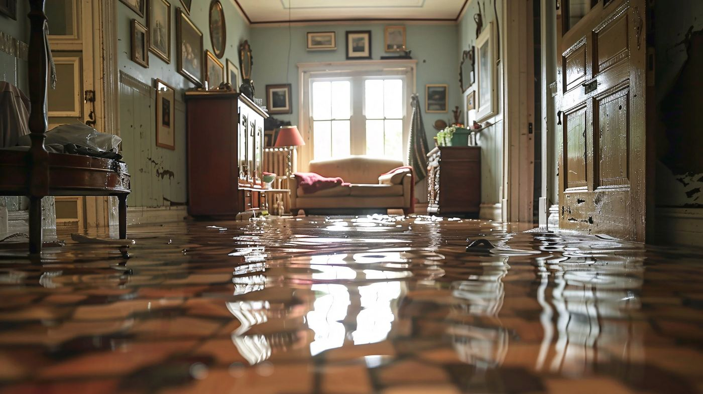
The job ends with floors dry underfoot, walls at standard moisture, work areas cleaned, and a folder of documentation — photos, readings and the drying log — for your records or your insurer.
Lubbock itself is covered by every page above — it is home base. View the Lubbock area page → View the Lubbock area page → Each surrounding town below has its own page too, because a crawl space in Slaton, a freeze burst in Abernathy and a storm flood in Plainview are three different jobs. Every town named on this site — including New Deal, Buffalo Springs Lake, Reese Center, Posey, Acuff, Roosevelt, Smyer and Lorenzo — now has its own full page below.
Four full guides, written for South Plains homes — what to do in the first hour, why pipes burst here, how drying actually works, and how to get through storm season.
What you do in the first hour after finding standing water decides how much of your home can be saved.
Read guide →Why South Plains plumbing fails on the coldest nights, and the drying that has to follow.
Read guide →Air movers, dehumidifiers and moisture meters — the actual mechanics of drying a house.
Read guide →Roof leaks, wind-driven rain and playa flooding — and the cleanup that follows each one.
Read guide →One exact set of business details, used identically everywhere — on this site, on Google, and on every directory — so you can always verify that the crew you found is the crew you meant to call.
| Name | Water Damage Lubbock |
|---|---|
| Website | waterdamagelubbock.com |
| Phone | (806) 217-9635 — call or text, 24/7 |
| Category | Water damage restoration service • Flood cleanup service • Emergency water removal |
| Hours | Open 24 hours — Monday to Sunday, emergency service |
| Area | Lubbock, TX plus Wolfforth, Slaton, Levelland, Plainview, Idalou, Abernathy, Shallowater, New Deal, Ransom Canyon, Buffalo Springs Lake, Reese Center, Posey, Acuff, Roosevelt, Smyer and Lorenzo |
| Services | The 8 services listed under Services on this page |
Claiming and verifying the Google Business Profile needs the real business address and owner verification with Google, which only the business owner can complete. Until then the profile status stays as marked above — no verified Google profile is claimed on this page.
There are no reviews copied onto this page — real reviews live on Google and the directories above, written by the customers themselves. If we worked on your home, a useful review names 1) your town and the job (“burst pipe drying in Slaton”), 2) what actually happened — arrival speed, whether the written scope matched the work — and 3) how the home felt after: dry floors, no lingering smell, rooms back in use.
Straight answers about water damage restoration in Lubbock — the same answers dispatch gives on the phone.
The cost depends on how much water came in, how far it spread and how long materials stayed wet. After inspection and moisture mapping, you get the complete scope and price in writing before work begins. No prices are published here, because no two water losses are the same.
Crews are based in Lubbock and answer 24/7. Emergency water removal is dispatched across Lubbock, Wolfforth, Slaton and the surrounding South Plains towns as fast as road conditions allow, day or night, weekends and holidays included.
If it is safe, shut off the water at the source or the main valve, switch off power to the wet rooms at the breaker, move valuables and soft furnishings off the floor, and call (806) 217-9635. Do not walk through sewage water, and do not use a household vacuum on standing water.
Most Lubbock homes reach dry standard in three to five days of structural drying once extraction is complete. Technicians check moisture readings daily and only remove equipment when walls, floors and framing measure dry.
Often, yes. In-place drying with air movers, dehumidifiers and wall-cavity drying systems saves many materials. Removal is recommended only where water is trapped, contaminated, or materials have already swollen, buckled or grown mold.
Yes. Sewage is treated as contaminated water: crews wear protective equipment, extract and dispose of waste, remove unsalvageable porous materials, then clean, disinfect and dry the area before it is used again.
Fast extraction and thorough drying are the strongest mold prevention there is. Mold can begin growing on wet materials within 24 to 48 hours, which is why emergency drying starts the same day and moisture is verified with meters before equipment is removed.
Lubbock plus Wolfforth, Slaton, Levelland, Plainview, Idalou, Abernathy, Shallowater, New Deal, Ransom Canyon, Buffalo Springs Lake, Reese Center, Posey, Acuff, Roosevelt, Smyer and Lorenzo, and surrounding Lubbock County, Hale County, Hockley County and Crosby County communities on the South Plains.
Yes — Wolfforth, Slaton, Levelland, Plainview, Idalou, Abernathy, Shallowater, Ransom Canyon, New Deal, Buffalo Springs Lake, Reese Center, Posey, Acuff, Roosevelt, Smyer and Lorenzo each have a full area page above, and Lubbock is covered by every service page on this site.
Text (806) 217-9635 with your town and the problem, and dispatch calls you back. There is no automatic text-back until a text service is enabled — calling or texting the number is the way to reach us.
Reviews live on the Google Business Profile and the directories listed in the Business Profile & Reviews section — written there by real customers. This page deliberately carries no copied reviews and no star ratings.
This website itself sets no cookies and adds no analytics of its own, and it collects no information from you — there is no contact form. You reach us only by calling (806) 217-9635. Read the full policy: Privacy Policy →
Do not let it sit overnight. One call starts extraction and drying — and if the line is busy, text (806) 217-9635.